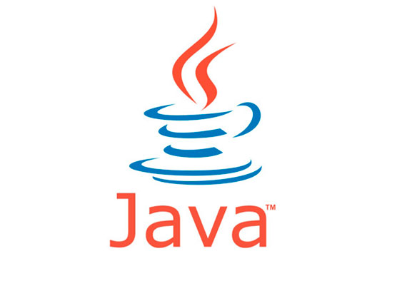

Java (linguagem de programação)
Documentação => Java

Java é uma linguagem de programação orientada a objetos desenvolvida na década de 90 por uma equipe de programadores chefiada por James Gosling, na empresa Sun Microsystems, que em 2008 foi adquirido pela empresa Oracle Corporation. Diferente das linguagens de programação modernas, que são compiladas para código nativo, Java é compilada para um bytecode que é interpretado por uma máquina virtual (Java Virtual Machine, abreviada JVM). A linguagem de programação Java é a linguagem convencional da Plataforma Java, mas não é a sua única linguagem. A J2ME é utilizada em jogos de computador, celular, calculadoras, ou até mesmo o rádio do carro.
História
Em 1991, na Sun Microsystems, foi iniciado o Green Project, o berço do Java, uma linguagem de programação orientada a objetos. Os mentores do projeto eram Patrick Naughton, Mike Sheridan, e James Gosling. Eles acreditavam que, eventualmente, haveria uma convergência dos computadores com os equipamentos e eletrodomésticos frequentemente usados pelas pessoas no seu dia-a-dia.
Para provar a viabilidade desta ideia, treze pessoas trabalharam durante dezoito meses. No verão de 1992 eles emergiram de um escritório de Sand Hill Road (no Menlo Park), com uma demonstração funcional da ideia inicial. O protótipo se chamava *7 (lê-se “Star Seven”), um controle remoto com uma interface gráfica touchscreen, acompanhado de um mascote, hoje amplamente conhecido no mundo Java, o Duke, que tinha a função de ser um guia virtual ajudando usuários a utilizar o equipamento. O star-seven tinha a habilidade de controlar diversos dispositivos e aplicações. James Gosling especificou uma nova linguagem de programação para o *7. chamada de “Oak”, que quer dizer carvalho, uma árvore que ele podia observar quando olhava através da sua janela.
O próximo passo era encontrar um mercado para o star-seven. A equipe achava que uma boa ideia seria controlar televisões e vídeo por demanda com o equipamento. Eles construíram uma demonstração chamada de MovieWood, mas infelizmente era muito cedo para que o vídeo por demanda bem como as empresas de TV a cabo pudessem viabilizar o negócio. A ideia que o *7 tentava vender, hoje já é realidade em programas interativos e também na televisão digital. Permitir ao telespectador interagir com a emissora e com a programação em uma grande rede de cabos, era algo muito visionário e estava muito longe do que as empresas de TV a cabo tinham capacidade de entender e comprar. A ideia certa, na época errada.
Entretanto, o estouro da internet aconteceu e rapidamente uma grande rede interativa estava se estabelecendo. Era este tipo de rede interativa que a equipe do *7 estava tentando vender para as empresas de TV a cabo. E, da noite para o dia, não era mais necessário construir a infraestrutura para a rede, ela simplesmente estava lá. Gosling foi incumbido de adaptar o Oak para a internet e em janeiro 1995 foi lançada uma nova versão do Oak que foi rebatizada para Java — diz-se que inspirado no café que o time de desenvolvimento consumia, oriundo da ilha de de Java, e que também está presente na logomarca Java. A tecnologia Java tinha sido projetada para se mover por meio das redes de dispositivos heterogêneos, redes como a internet. Agora aplicações poderiam ser executadas dentro dos navegadores nos Applets Java e tudo seria disponibilizado pela internet instantaneamente. Foi o estático HTML dos navegadores que promoveu a rápida disseminação da dinâmica tecnologia Java. A velocidade dos acontecimentos seguintes foi assustadora, o número de usuários cresceu rapidamente, grandes fornecedores de tecnologia, como a IBM anunciaram suporte para a tecnologia Java.
Desde seu lançamento, em maio de 1995, a plataforma Java foi adotada mais rapidamente do que qualquer outra linguagem de programação na história da computação. Em 2004 Java atingiu a marca de 3 milhões de desenvolvedores em todo mundo. Java continuou crescendo e hoje é uma referência no mercado de desenvolvimento de software. Java tornou-se popular pelo seu uso na internet e hoje possui seu ambiente de execução presente em navegadores, mainframes, sistemas operacionais, celulares, palmtops, cartões inteligentes etc.
Documentação => Java
Esta postagem é apenas um resumo, o link => wikipédia